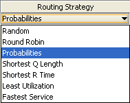

How to Define the Routing Strategy
_________________
The Routing section is part of the Station Parameters definition page defined for all stations, except for fork and sink stations.
In the routing section, for every class defined, you can decide how the completed jobs are routed to the other devices connected to station for which the routing strategy is defined.
For each class, the routing algorithm to be used on the outgoing links of the station is selected from this menu:

By clicking an algorithm, a brief explanation of the selected algorithm is shown and routing options can be specified,where necessary:
You can choose among the following algorithms (NOTE: in each of the pictures illustrating the algorithms, the blue station implements the routing strategy to the other devices):
Random: with this strategy, jobs are routed randomly to one of the stations connected to the routing device. The outgoing links are selected with the same probability.The figure illustrates the routing strategy with 3 output links. For each link the probability to be selected is 1/3.
Round Robin:with this algorithm, jobs are cyclically routed to the outgoing links according to a circular routing. As the figure shows, the first job is sent to the top station, the second job is sent to the central station, and the third job is sent to the bottom station. The next job would be sent to the top station again, and so on.
Probabilities: with this algorithm, you can define the routing probability for each outgoing link.The sum of all probabilities must equal 1. If the values provided do not satisfy the constraint, JSIM automatically normalizes the values before the simulation starts.
This strategy requires that you define the probability foreach output link via the panel on the bottom right of the window.
Join the Shortest Queue (JSQ): with this strategy, each job is routed to the device that has the smallest queue length, i.e., number of jobs waiting, at the time the job leaves therouting station.
The figure shows a case where the queue lenghts at the devices are 3, 2, and 1 jobs, respectively, from top to bottom. The exitiing job will be routed to the bottom station, since its queue is the shortest(1 job).
Shortest R Time: with this algorithm, jobs are sent to the station where the average response time for the job's class is the smallest at the moment a job leaves the routing station.The figure shows that at the time of routing, the middle station has the smallest average response time, R, so the job will be sent to it.
Least Utilization: with this strategy, the destination device is chosen as the one with the smallest average utilization at the time routing is performed. In the example depicted in the picture, the top station is the least utilized, so it will receive the next job to leave the blue station.
Fastest Service: with this strategy, a job is routed to the device with the smallest average service time, S, for the job's class. In the figure, the exiting job will be routed to the top station since it service time is the minimum among the three.